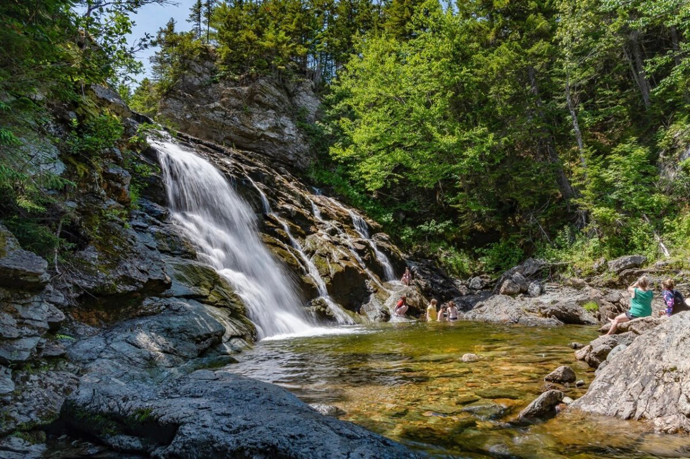
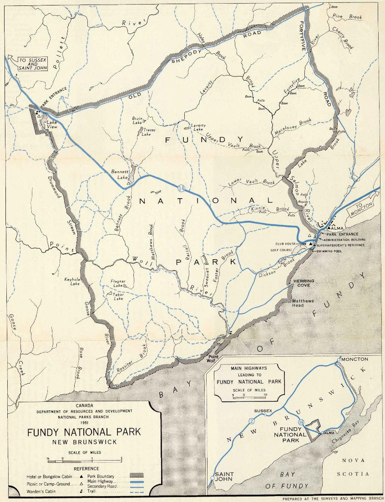
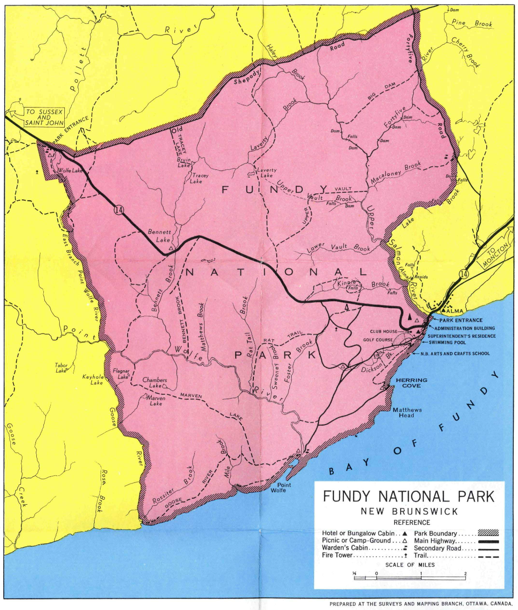
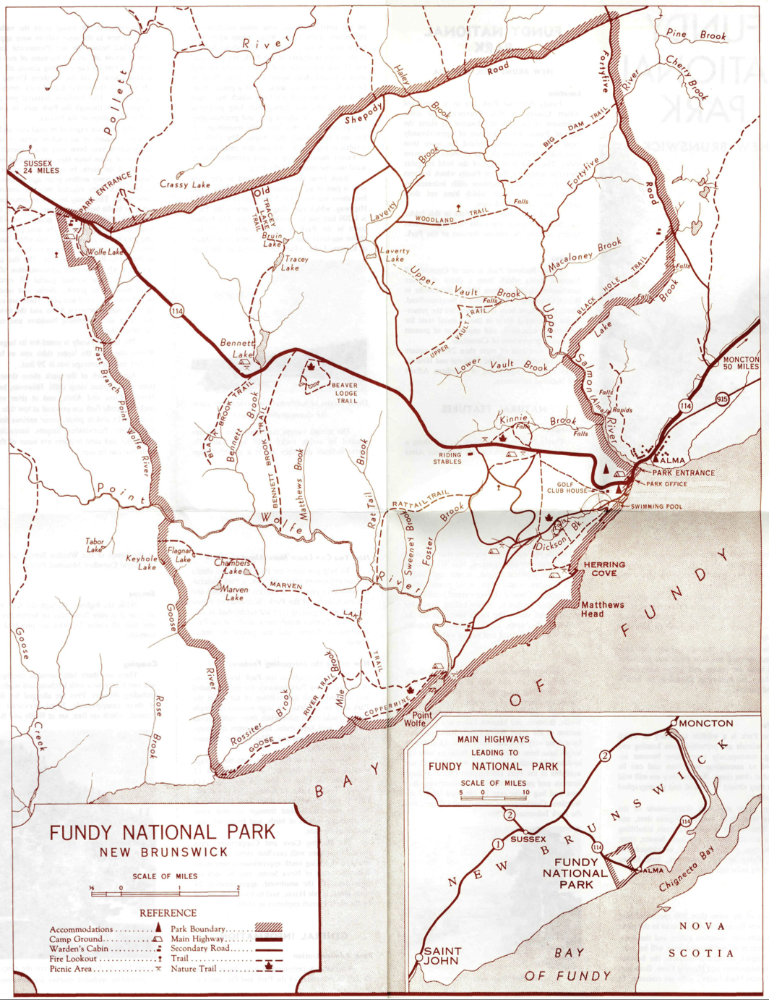
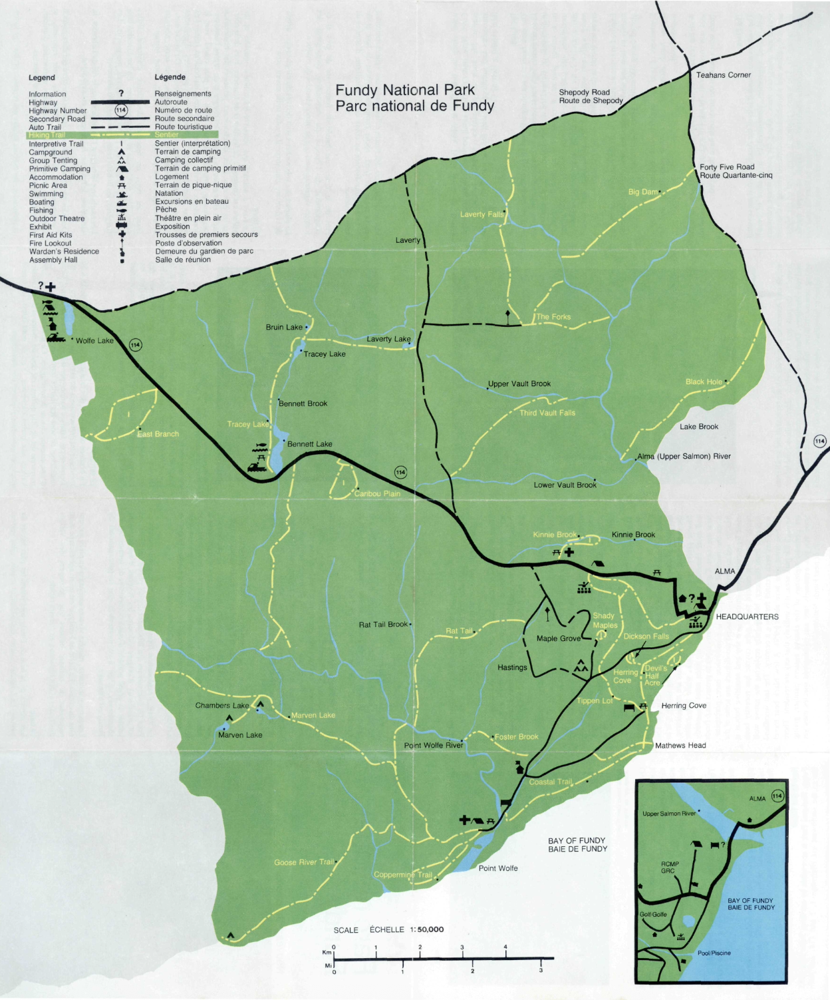
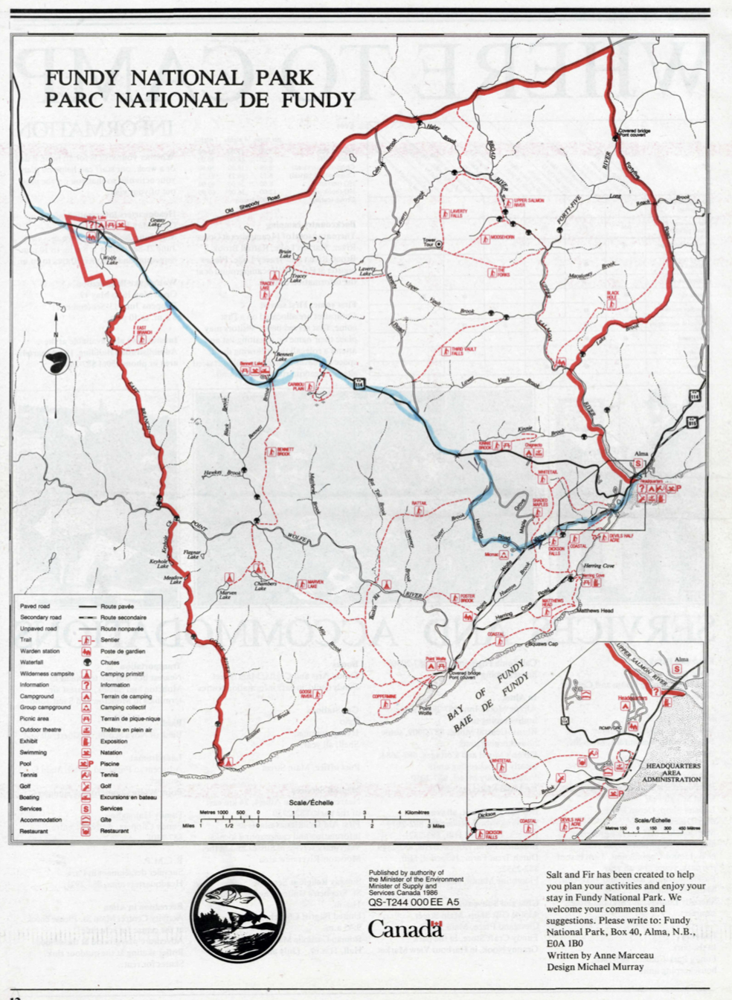
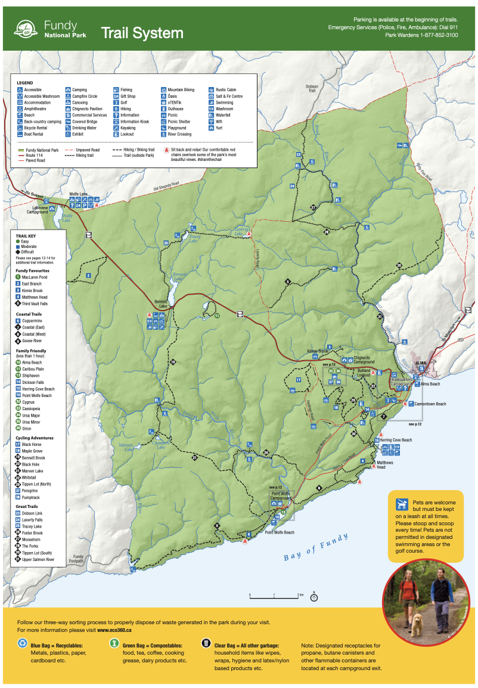
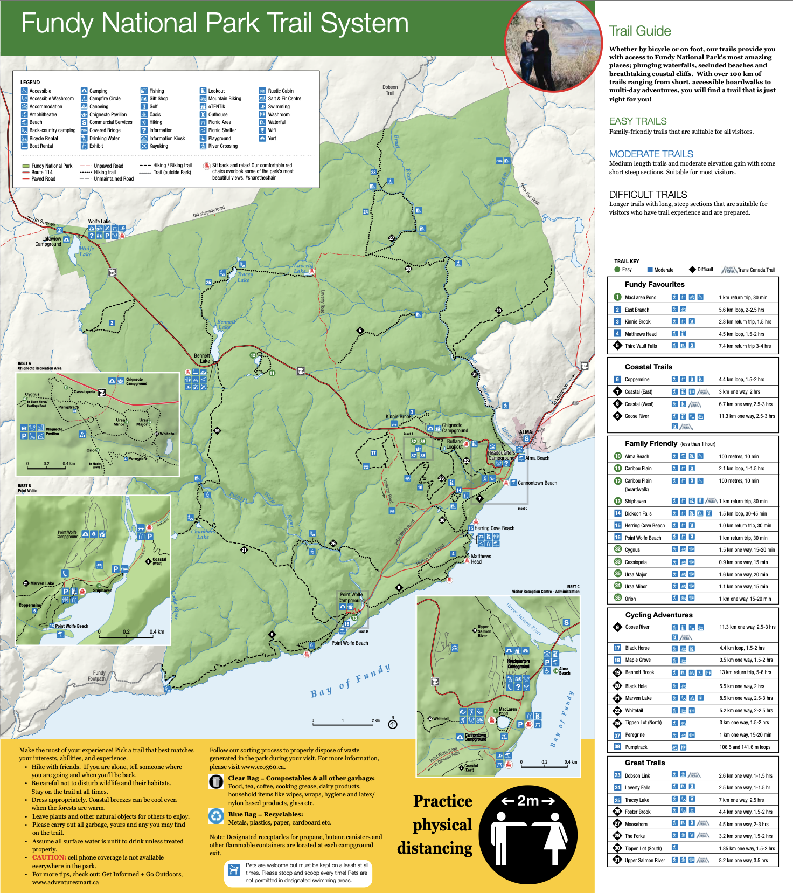

About the Park
Fundy National Park was established in 1948 and covers 205.9 km2 of land. It is located in New Brunswick and is on the Altantic Coast of Canada. Fundy National Park is known for its high tides that average about 9 metres.
New Brunswick

Fundy National Park was established in 1948 and covers 205.9 km2 of land. It is located in New Brunswick and is on the Altantic Coast of Canada. Fundy National Park is known for its high tides that average about 9 metres.
There are very fun colours and very fun lines. I found the actual geographical shape of this park to be the most interesting part of the maps and I think the way colour was used in these ones makes them even cooler!

1950

1950

1951

1960

1965
Not much change in maps in this era but they honestly didn't need to so I'm not mad about it.

1980

1986
Such a cool park with so much potential for a fun map! scroll back up! Not even a quarter of the screen ago the maps for this park were fun and cool and now they all look the exact same. No creativity, fun colours, or fun lines. I swear I'm not trying to sound so bitter but it is hard.

2019

2020

2022